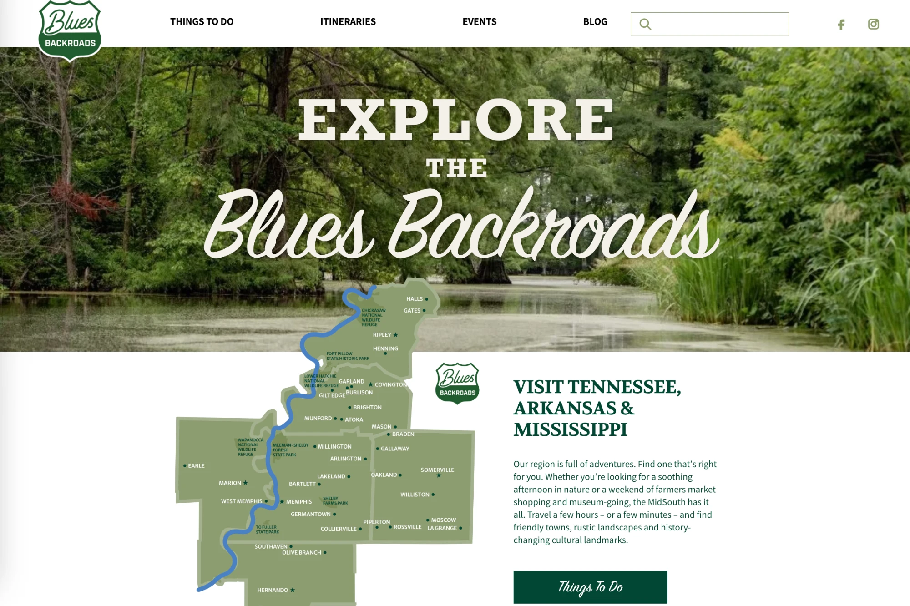

Selected Website Portfolio
Relevant strategy, design, development and long-term support — real websites we've built and migrated for clients like you.
A Sample of Our Website Work
Six recent projects — new brands, platform migrations, community platforms and long-term partnerships — each one relevant to what First 5 OC needs next.

The Sigmund Project
Marina del Rey, CA — Squarespace to Lovable, two years in and never looked back
We built The Sigmund Project from the ground up — brand identity, website, social strategy, and a community platform serving 10,000+ tourism professionals. We started on Squarespace and moved to Lovable two years ago. The platform headaches disappeared, and the team now feels they can build the website they actually want — no more limitations like the old platform had.
As a nonprofit, that freedom matters even more. Two years ago we launched the RFP Hub inside the platform specifically to help fund the organization — it's on track to generate approximately $50,000 in 2027 to offset the nonprofit's budget. That's something we could never have pulled off on Squarespace or WordPress with a small team. Lovable let us be small but mighty for a nonprofit that has to make every dollar count.
Baldrige Alliance
Washington, D.C. — Organization website rebuilt on Lovable (In Progress)
Right now, we're rebuilding the Baldrige Alliance website from the ground up on Lovable — the exact platform we're recommending for First 5 OC. We're preserving everything from the WordPress site in the process: URLs, page structure, SEO rankings and every link, so the transition is smooth with nothing lost. Click either screenshot below to open that site and explore it yourself.
This is real, hands-on experience with the platform you'd be using. Lovable looks familiar (like WordPress), but it's actually more reliable and doesn't break. The staff editing tools are simpler, the backend is more stable, and you get a solid system your team can manage independently. We're happy to walk you through a demo of both the front-end and backend during your decision process.
Which site would you like to see?
Both open in a new tab.

Adventure International
Venice Beach, CA — Website migration to Lovable with improved SEO and no platform limitations
We just completed Adventure International's migration from WordPress to Lovable. Just like with Baldrige Alliance, we preserved everything from the WordPress site — content, URLs, page structure and SEO rankings — so the transition was smooth with nothing lost.
The results: significantly improved SEO, faster performance, no more WordPress limitations, and staff can now update content confidently without workarounds or support tickets. This is real-world proof of what the RFP asks for — a system that fits the client's budget and priorities. Your team would experience the same smooth transition.

Inspire Life Skills
Corona, CA — serving foster youth, now considering the move to Lovable
Inspire Life Skills approached us to help them get off WordPress — their site had become expensive and hard to manage. At the time they only wanted Squarespace, and we rebuilt their entire website there in a week for 10% of what they originally paid to build the WordPress site.
Now, they're considering a move to Lovable to make it easier to pull reports, track engagement on the site, and get donor insights — capabilities that matter a lot for an organization serving foster youth. We also helped tell their 20th anniversary story across video, email, social media, their website and a sold-out gala, turning the interviews into a reusable library of stories, quotes and content they still use.

Blues Backroads
Memphis, TN — WordPress to Squarespace migration
For MidSouth Development District — a public regional organization serving six counties and 38 municipalities — WordPress became too hard for staff to manage. We migrated them to Squarespace so they could handle everyday updates confidently again. We rebuilt the tourism website on a maintainable platform, migrated content, protected SEO and improved itineraries, maps and events. We also created an event submission and review workflow for community partners.
This shows we understand when a platform stops working for a team and know how to move to something simpler and more reliable. Your staff will experience the same confidence with Lovable.


Pitcairn Islands: Tourism + Government
Full-service partnership, 10 years and counting
We manage both visitpitcairn.pn (tourism board) and government.pn (official government website) for one of the world's most remote communities — full-service, across both sites, for the last 10 years. Large, content-rich sites with complex navigation, booking information, travel and immigration guidance, shipping schedules, community content, SEO, analytics, email, forms and ongoing public updates. Currently in talks to rebuild the new tourism site.
Why These Examples Matter
Together, these projects show we can organize complex information, serve multiple audiences, migrate and maintain content, create useful digital tools, train client teams and stay involved after launch.
The Baldrige Alliance and Adventure International projects are especially relevant — they show we're actively building and migrating to Lovable right now. Adventure International's completed WordPress migration demonstrates real results: improved SEO, faster performance, no more platform limitations, and staff who can update confidently. You get a partner with current, proven experience with the exact platform we're recommending. Lovable looks familiar but is more reliable than WordPress and doesn't break. Your staff will actually enjoy using it.
We understand the complete picture, create clear structure and leave clients with a system they can confidently own.
More of our work: meaningfulmarketinghouse.com
What a New First 5 OC Site Could Look Like
Organized around what people actually need to accomplish — not around program names. Here's a demo of the "Ask Us Anything" tool we'd explore for First 5 OC.
- Visitors ask everyday questions in their own words — no need to know program names like "HubCAP" or "CalWORKs."
- Answers are pulled only from approved First 5 OC content, so families and partners always get accurate, sanctioned information.
- Every answer links directly to the right page, resource or staff contact — turning a question into a next step.
- Reports and public documents become easier to search and use, instead of sitting in a buried PDF archive.
- The same approach we're piloting for the Baldrige Alliance — real, working experience with this exact kind of tool.
Here's An Idea for How the Site Could Be Restructured
A different way to organize the new First 5 OC site around what visitors are actually trying to do — find support, understand your work, or get involved — instead of around program names. It includes a working demo of the "Ask a Question" tool, which doubles as an FAQ builder: every question it fields over time becomes a candidate for the site's public FAQ page. Try the full site below first, then scroll down for another design direction.
Explore the Public Site and Staff Admin Portal
This is just a mockup to show how we would reorganize the public-facing site so visitors get where they're going faster — and how the staff of First 5 OC would log in to make changes, edit pages, create new pages and more (spoiler: it looks a lot like WordPress). Try both below, or open either in a new tab.
Let's make
something
MEANINGFUL.
Schedule a time that works for you